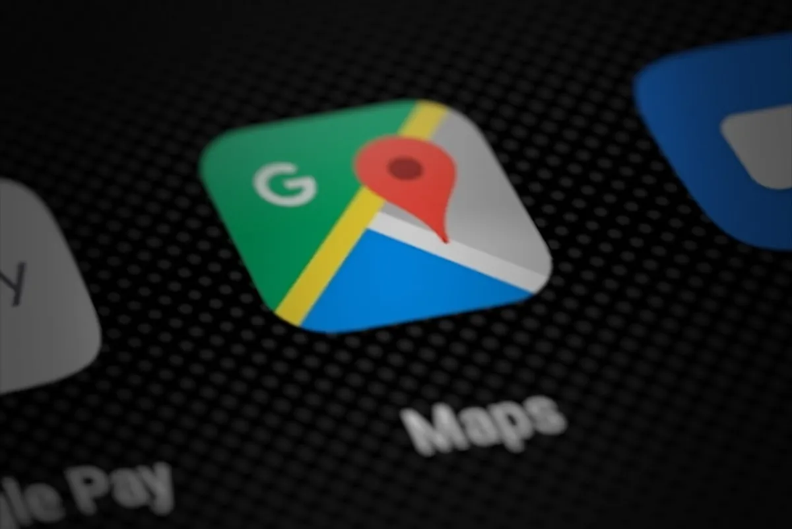
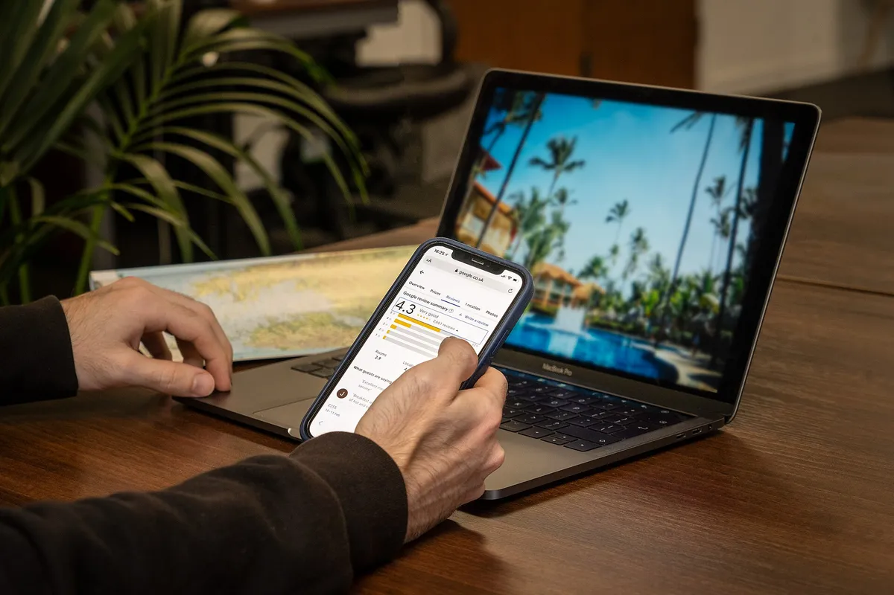

Google Maps 2026: las nuevas protecciones contra reseñas falsas y qué significan para tu negocio
Google anunció pausas automáticas de reseñas, Gemini contra ediciones falsas y alertas para dueños. Qué cambió en 2026 y qué debe hacer tu negocio.

En resumen
- El 16 de abril de 2026 Google anunció tres protecciones: freno a estafas con reseñas, Gemini contra ediciones falsas y alertas por correo.
- Si detecta un pico de reseñas sospechosas, Google puede pausar las reseñas nuevas del perfil y mostrar un aviso a los usuarios.
- En 2025 bloqueó o eliminó más de 292 millones de reseñas y más de 13 millones de perfiles falsos.
- La estrategia ganadora: reseñas reales, de todos tus clientes, de forma constante y sin incentivos.
Contenido del artículo
El 16 de abril de 2026, Google anunció en su blog oficial, The Keyword, tres nuevas protecciones para los negocios en Google Maps. Al mismo tiempo publicó las cifras de su informe de confianza y seguridad de 2025. Si tienes un negocio en México con Perfil de Empresa, estas medidas te afectan directamente, para bien, pero también cambian la forma correcta de pedir reseñas. Aquí te explicamos qué cambió, qué significa en la práctica y qué hacer.
Qué anunció Google: las tres nuevas protecciones
1. Freno a las estafas con reseñas antes de que se publiquen
Google afirma que sus sistemas ahora detectan mejor patrones de estafa específicos, como los intentos de exigir un pago a cambio de quitar reseñas falsas de una estrella. Las publicaciones sospechosas pueden bloquearse antes de que aparezcan en tu perfil.
La novedad más visible: si los sistemas detectan un aumento repentino de reseñas sospechosas en un perfil, Google elimina el contenido falso, pausa temporalmente la publicación de nuevas reseñas en ese perfil, avisa al propietario y muestra un aviso a los consumidores explicando la pausa. Según el anuncio, esta función se lanzaría a nivel mundial en las semanas siguientes.
2. Gemini para detectar ediciones falsas
Cualquier usuario puede sugerir cambios en la información de un negocio (horario, teléfono, si cerró…). Google explica que ahora usa modelos de Gemini para bloquear antes de su publicación las ediciones que incumplen sus políticas, incluidos comentarios sociales o políticos con matices locales. La función está disponible en Android, iOS y computadora.
3. Alertas por correo para los dueños
Los propietarios verificados y activos empiezan a recibir alertas proactivas por correo sobre ediciones importantes, como cambios de horario o cierres temporales, para revisarlas antes de que se publiquen.

Las cifras de 2025: el tamaño del problema
En el mismo anuncio, Google compartió los datos de su trabajo contra el contenido engañoso en Maps durante 2025:
| Indicador (2025) | Cifra |
|---|---|
| Reseñas compartidas por la comunidad | Más de 1,000 millones |
| Reseñas bloqueadas o eliminadas por infringir políticas | Más de 292 millones |
| Ediciones inexactas o no verificadas bloqueadas | 79 millones |
| Cuentas con restricciones de publicación | Más de 782,000 |
| Perfiles de Empresa falsos eliminados | Más de 13 millones |
Para ponerlo en contexto: en su informe de 2024, Google había reportado alrededor de 240 millones de reseñas bloqueadas o eliminadas. La tendencia es clara: cada año la plataforma detecta y elimina más contenido falso.
Qué significa para tu negocio
Lo bueno: más protección contra ataques y extorsiones
Si alguna vez un competidor o un estafador llena tu perfil de reseñas de una estrella y luego te pide dinero para «quitarlas», ahora Google tiene herramientas específicas para detectarlo y frenarlo. Y si un desconocido intenta marcar tu negocio como «cerrado permanentemente», recibirás un aviso antes de que el cambio se publique.
El cambio de hábito: evita las rachas artificiales
La pausa automática por picos de reseñas sospechosas tiene una consecuencia práctica: las campañas de «junta 50 reseñas este fin de semana» son una mala idea, sobre todo si incluyen incentivos, empleados o familiares. Lo que Google quiere ver, y lo que también buscan los consumidores, es un flujo constante y natural de reseñas de clientes reales.
Esto coincide con lo que dicen los compradores: en la encuesta 2026 de BrightLocal, el 74% busca reseñas de los últimos tres meses y el 32% busca reseñas de las últimas dos semanas. Diez reseñas al mes durante un año valen más que cien en un fin de semana.
La verificación importa más que nunca
Las alertas por correo solo llegan a propietarios verificados y activos. Si no has entrado a tu Perfil de Empresa en meses, hazlo: revisa que tu correo esté al día y que tengas acceso de propietario.
Qué hacer ahora: checklist de 7 puntos
- Verifica tu perfil y confirma que el correo de propietario sea uno que revisas a diario.
- Revisa tus horarios y datos: teléfono, dirección, categoría y sitio web. Así detectarás de inmediato cualquier edición extraña.
- Pide reseñas a todos tus clientes, todos los días, sin elegir solo a los que se ven contentos.
- No ofrezcas incentivos: ni descuentos, ni postres, ni rifas a cambio de reseñas.
- No pidas reseñas a empleados, familiares o socios: es conflicto de intereses según las políticas de Google.
- Responde todas las reseñas; el 89% de los consumidores espera que el dueño lo haga.
- Si te extorsionan, no pagues: reporta las reseñas desde tu Perfil de Empresa y guarda capturas de los mensajes.
¿Las tarjetas NFC de reseñas siguen siendo seguras?
Sí, y de hecho encajan perfecto con el nuevo enfoque. Una tarjeta NFC de reseñas no publica nada por sí misma: solo abre el enlace oficial de reseñas de tu negocio. El cliente decide si deja una reseña, cuántas estrellas pone y qué escribe. Como la tarjeta está siempre en tu mostrador, genera justo lo que Google premia: un goteo constante de reseñas reales, de clientes reales, a lo largo del año.
Lo que sí debes evitar es usarla para prácticas prohibidas: por ejemplo, pedir que la usen solo los clientes satisfechos o premiar a quien deje cinco estrellas. Si quieres repasar las reglas a detalle, lee nuestra guía sobre reseñas falsas y políticas de Google.
Conclusión
Las protecciones de 2026 hacen de Google Maps un lugar más justo para los negocios que trabajan bien. La receta para crecer no cambió, solo se volvió más importante: un perfil verificado y completo, reseñas reales pedidas a todos tus clientes de forma constante, y respuestas a cada opinión. Si quieres un plan paso a paso, empieza por las 15 estrategias para conseguir más reseñas en Google y la guía de SEO local para aparecer en Google Maps.
Preguntas frecuentes
¿Qué anunció Google sobre las reseñas en abril de 2026?
Tres protecciones para negocios en Maps: detección de estafas con reseñas (incluida la pausa temporal de reseñas cuando hay un pico sospechoso), uso de Gemini para bloquear ediciones falsas y alertas por correo para que los dueños verificados revisen cambios importantes antes de publicarse.
¿Google puede pausar las reseñas de mi negocio?
Sí. Según Google, si sus sistemas detectan un aumento repentino de reseñas sospechosas, eliminan el contenido falso, pausan temporalmente las reseñas nuevas, avisan al propietario y muestran un aviso a los consumidores.
¿Qué hago si me piden dinero por quitar reseñas de una estrella?
No pagues. Reporta las reseñas desde tu Perfil de Empresa y guarda evidencia de los mensajes. Google indicó que sus sistemas ahora detectan mejor este tipo de extorsión.
¿Las tarjetas NFC de reseñas siguen siendo válidas?
Sí. La tarjeta solo abre el enlace oficial de reseñas; el cliente decide qué escribir. Además ayuda a lograr un flujo constante de reseñas reales, justo lo que Google favorece.
Fuentes y referencias
- New ways we're protecting businesses on Maps — Google, The Keyword (16 de abril de 2026)
- Contenido prohibido y restringido — Políticas de contenido aportado por usuarios de Google Maps
- Restricciones del Perfil de Empresa por infracciones de políticas — Ayuda de Perfil de Empresa de Google
- Local Consumer Review Survey 2026 — BrightLocal
Las marcas mencionadas pertenecen a sus respectivos dueños. Las imágenes provienen de Wikimedia Commons y se usan según su licencia libre, indicada en cada pie de foto.

Diseñamos y programamos tarjetas NFC con código QR para negocios de todo México. Escribimos estas guías con base en la documentación oficial de Google, Apple y Android y en lo que aprendemos todos los días con nuestros clientes.
Contáctanos · Cómo funcionan nuestras tarjetas